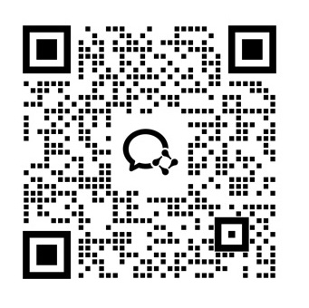

本服务不是一次培训，而是以「赋能团队 · 沉淀资产 · 形成机制」为目标的三个月落地陪跑：先让全员用起来，再以任务场景为主线共创改造，最终沉淀可复用的专家资产，让企业具备脱离辅导、持续进化的内生能力。
服务围绕人的能力、团队组织、可改造场景、实践成果与组织机制展开，遵循以赛代练、逐级收敛的组织方式。
第一阶段选拔决定小组构成，第二阶段提效点清单决定第三阶段共创内容，层层递进、步步深化。
每项都有明确动作与可验收成果，全部成果归甲方所有。
与甲方共建《内部 AI 竞赛活动方案》：赛程、积分、奖惩、评审全案。
成果：规则先行，全员动员有抓手。
覆盖全部用户：账号界面、核心功能、典型岗位场景、操作规范。
成果：全员能上手、能完成真实小任务。
面向种子与骨干：上下文管理、系统对接、数据抓取比对、MCP 等进阶能力。
成果：支撑任务与场景改造。
两次线下深度共创：改造与沉淀、验证与优化。
成果：小组产出可复用改造成果。
成果反向封装为专家 / Skill，统一上报、下发、版本化管理。
成果：每组 ≥1 主场景专家 + 提效点清单。
正式成果汇报与评审，形成工作场景改造方法论。
成果：可复制的方法论与组织级专家资产。
筹备先行、阶段推进、成果收口。
确定活动与培训方案、人员组织，诊断工作场景，建立奖惩与评审机制。
交付：《内部 AI 竞赛活动方案》全案
全员基础培训、使用激活、周总结、双周标杆分享、种子选拔。
交付：培训材料 · 标杆案例集 · 种子名单与小组方案
深度培训、小组成立、两天专项研讨、提效点梳理、专家雏形。
交付：提效建议报告 · 提效点清单 · 专家雏形
两次线下共创工作坊、成果验证与迭代、正式汇报评审。
交付：改造成果（每组 ≥1 专家）· 复用说明 · 评审结果
服务方只做组织、引导、方法示范与点评；全部成果归甲方所有。
框架性服务方案，具体以双方签署的正式合同为准。
常规按 ¥500 / 用户 / 月，3 个月为一周期；20 个账号以内按 1 万元 / 月收取。

用于核对服务范围、阶段目标、参与用户数与预算，并约定启动时间。也可先阅读「价格与选型」了解账号方案。